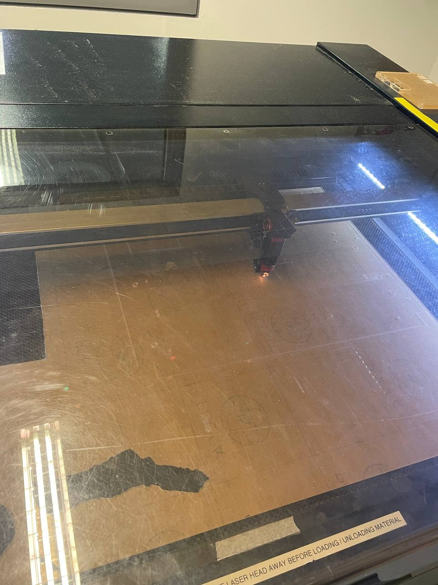

Falali — One AMR Fits All
30.007 EDI · 2026Autonomous mobile robot · arm electronics · embedded control
A team project developing an autonomous mobile robot for textile-manufacturing trolley transport. Falali is designed to drive underneath a trolley, deploy side-gripping arms and secure the load without modifying the trolley; the portfolio focuses on my arm-subsystem work and the available prototype validation rather than claiming a finished production system.
- My contribution: designed the arm-subsystem PCB in KiCad, from schematic and interfaces through layout and fabrication outputs.
- Prototyped and tested the ESP32-S3, VL53L0X ToF sensors, servo flippers, limit switches and external BTS7960 motor interfaces.
- Developed PlatformIO/Arduino C++ firmware with XSHUT sequencing for four ToF sensors, PCA9685 servo control, homing, hard-stop protection, timeouts, emergency stop and serial diagnostics.
- Implemented the arm state machine: Homing → Extending → Pre-flip → Flipping → Retracting → Stopped, with a clamp/release sequence.
- The PDR specified a ≤200 mm height target, ≥300 N holding-force target and ≥100 kg trolley-plus-load target; the reported prototype assessment lists 167 mm AMR height, while the workspace inventory records approximately 70 kg demonstrated in the available media/evidence.